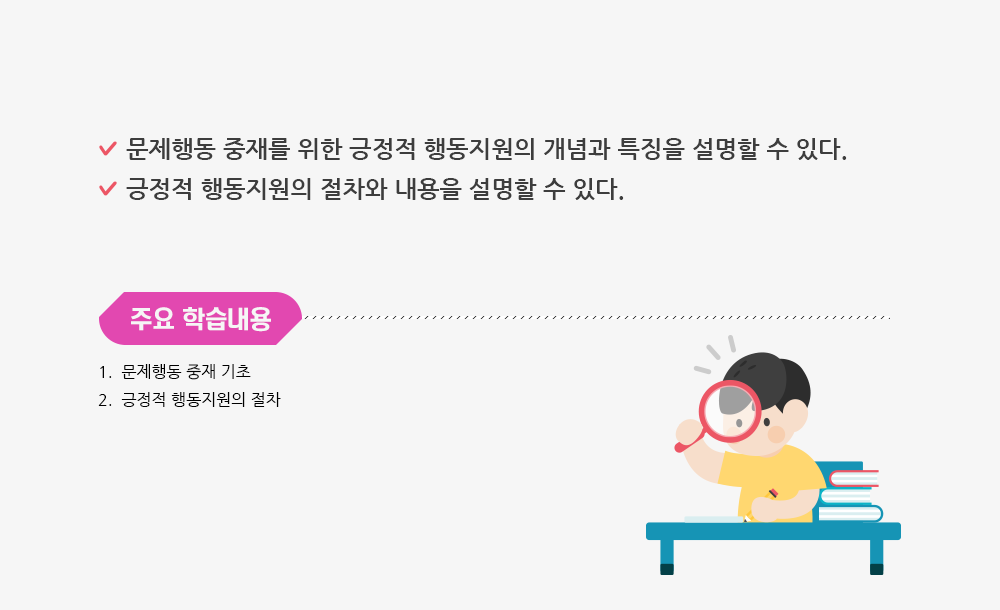
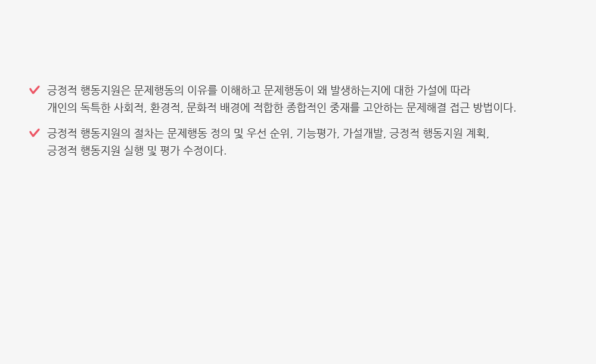

1 10
1 10
강사 : 윤주연
사전학습
사랑의 매에 대한 자신의 생각이나 경험을 아래에 입력해봅시다.
긍정적 행동지원의 가장 중요한 목표는 아동과 가족 그리고 주변 인물과
지역사회 걸쳐 전반적인 삶의 질에 긍정적인 영향을 미치는데 있다.
들어가기>학습목표
정리하기>퀴즈
Q1음 문제행동들이다. 가장 우선시 지원해야 할 행동을 고르시오.
정답 : ①
문제행동의 우선 순위를 정하기 위해서는 자신과 타인을 해롭게 하거나 건강을 위협하는 등
생명을 위협하는 행동을 하고 있는 유진이는 파괴행동이다.
나머지 아이들의 행동은 방해행동과 주의 분산행동이라 볼 수 있다.
Q2유아교육기간 적응기간 동안 상희는 손가락을 자신의 눈 옆에 붙이고 마구 흔들며 불안해했다. 이러한 행동은 낯설거나 새로운 환경, 새로운 성인을 만났을 때도 나타난다. 상희의 행동의 기능은 무엇인지 고르시오.
정답 : ④
상희의 행동은 낯설거나 해로운 환경에 적응하기 위해 나타나는 상동행동으로
지속적으로 빈번하게 나타난다면 문제행동을 진단 내릴 수 있다.
상희의 행동의 기능 및 원인은 감각자극으로써 적응하기 위해 나타나는 행동이라 볼 수 있다.
Q3( )는(은) 부적절한 문제행동을 증가시키는 강화를 제거함으로써
행동을 감소시키는 것이다. 괄호 안에 들어갈 반응중재 전략으로
적절한 것을 고르시오.
정답 : ④
소거는 부적절한 문제행동을 증가시키는 강화를 제거함으로써 행동을 감소시키는 것이다.
자해행동이나 공격행동에서는 바람직하지 못하다.
감각적 자극의 경우에는 감각적 자극을 피드백을 제거함으로써 문제행동을 감소시킬 수 있다.
정리하기>학습정리
정리하기>보충학습
문제행동을 지원하는데 있어 긍정적 행동지원은 매우 유용한 지원 프로그램이다.
그렇다면 문제행동 중재의 예방적 측면에서의
유아교육기관 내에서 할 수 있는 것들을 기술해 보시오.
학습 후 보충 심화 학습자료를 확인해보세요.
긍정적지원 개념
긍정적행동지원 적용
윤주현 교수님